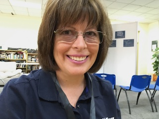

Library in Action
Our digital collection was not being checked out, so I divised a way for the students to be able to find the digital items in the shelf space they would be in if they were print. The students simply scanned the qr code and could quickly check out the e- or audiobooks. The digital check outs significantly increased.
About Me
Throughout my career, I have been recognized for my dedication to inspiring students' curiosity and problem-solving abilities. As a coach for FIRST LEGO robotics teams, I guided students to achieve first-place victories, nurturing their passion for technology and creativity. My expertise in conceptual mathematics and problem-based learning has earned me the prestigious "Innovation in Teaching" Award for utilizing concrete, representational, abstract (CRA) modeling in Middle School Mathematics. I firmly believe in student-centered learning experiences, and as such, I have developed interdisciplinary units of inquiry and integrated gamification to engage and motivate learners. In addition to my teaching endeavors, I have taken on leadership roles, including instructing graduate courses in assessment and educational technology and managing a team of library assistants. I am proactive in addressing challenges and have successfully solved issues related to digital library collections, transforming the professional library into a more accessible digital format. My dedication to academic integrity and research skills has led me to mentor students in these important areas.
Social Media
Liinkedin
Destiny Professional Development for Library Assistants
An important responsibility of a librarian is making sure that the library assistants have the knowledge necessary to provide excellent service. In the photo my library assistants are using Destiny Webinars to learn about new features.
Transformation in Educational Technology is More Rare then One Might Think
It's not the Tech, blog post by Carol LeMiuex
I have attended several ISTE conferences and a few Learning 2.0 unconferences over the years and each time I attend these technology and
learning-focused conferences I am intent on finding one thing; a true
example of redefined teaching and learning. Each time I find exciting
new ways to integrate technology into student learning opportunities,
yet in all these conferences I have only once attended a session where
truly I felt that the addition of the technology was significantly affecting students learning.
I wish I could remember the name of the teacher who presented this session. She taught sixth-grade math and used a combination of cloud resources to differentiate the instruction her students received. She did this on a daily basis with a great deal of attention to each student’s particular needs. The tasks these students were doing using the technology were simple substitution or possibly augmented activities, replacing the paper and pencil with “Explain Everything” and the answer sheet with a Google Form. But what she did with the data she received from these sources redefined the students’ ability to get exactly the teaching they needed. If she had just focused on the task; i.e. using Explain Everything to record the problem-solving process of her students, one might think that this redefined the task. The teacher can now both see the process and hear the thinking of the students. However, I have seen many teachers use this app for just this purpose, but then not follow up on the rich data they were collecting about students thinking or in many cases thinking the students doing the task was sufficient and never listening to the videos at all. SAMR focuses on redefining tasks, but I want to focus on the learning that will result from the tasks.